Pomodoro und Stechuhr
Fokus, kurze und lange Pause mit frei wählbaren Längen. Oder die Stechuhr, die offen läuft, bis du stoppst.
Pomodoro · Stechuhr · Auswertung
Taktwerk teilt Lernen und Arbeit in klare Runden: 25 Minuten Fokus, kurze Pause, weiter. Mit Projekten, Aufgaben und einer Auswertung, die zeigt, wohin deine Zeit geht.
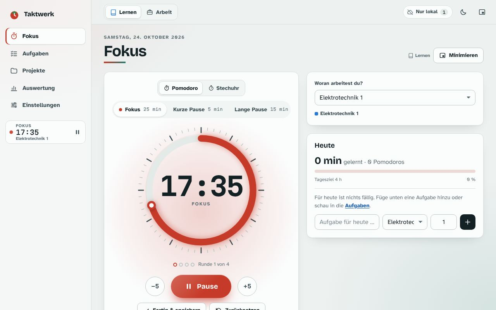
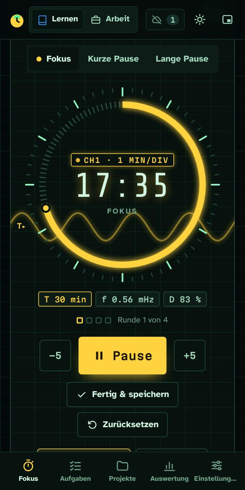
Funktionen
Nichts lenkt ab, alles ist einen Tastendruck entfernt. Die Zeit wird aus Zeitstempeln berechnet und läuft deshalb auch im Hintergrund exakt weiter.
Fokus, kurze und lange Pause mit frei wählbaren Längen. Oder die Stechuhr, die offen läuft, bis du stoppst.
Getrennt nach Lernen und Arbeit. Ein Klick auf eine Aufgabe startet den Timer, die Zeit wird ihr gutgeschrieben.
Woche, Monat, Jahr: Verlauf nach Projekt, Vergleich mit der Vorperiode, Export als CSV oder Excel.
Auch bei gesperrtem Handy: Ton, Benachrichtigung und Steuerung über die Medienleiste.
Eigenes Symbol auf Laptop und Handy, startet wie eine normale App und braucht kein Internet.
Mit einem kostenlosen Supabase-Konto auf dem Laptop starten und auf dem Handy pausieren.
Etwas vorspringen oder die Runde verlängern: den Zeiger mit Maus oder Finger verschieben, auf die Sekunde genau.
Space Rider, Hummelflug, Grand Prix, Waldjagd, Sudoku, Geschenkejagd, Memory, die Dschungelschlange und zwei 3D-Spiele: der Baustellen-Run und Kürbismann, die Suche nach dem richtigen Spukhaus. Endet die Pause, geht es zurück an die Arbeit.
Projekte mit Tags wie «Coding», «Lernen» oder «Admin» versehen und frei einfärben; die Auswertung zeigt die Zeit je Tag.
Sieben Klänge von Glocke bis Gong, je einer für das Ende von Fokus, kurzer und langer Pause. Oder die Zeit ganz ausblenden.
17 Stile
Jeder Stil hat Tag- und Nachtmodus, eigene Szenen für Fokus, kurze und lange Pause, ein Bild, das mit dem Fortschritt wächst, und feiert jede geschaffte Session.
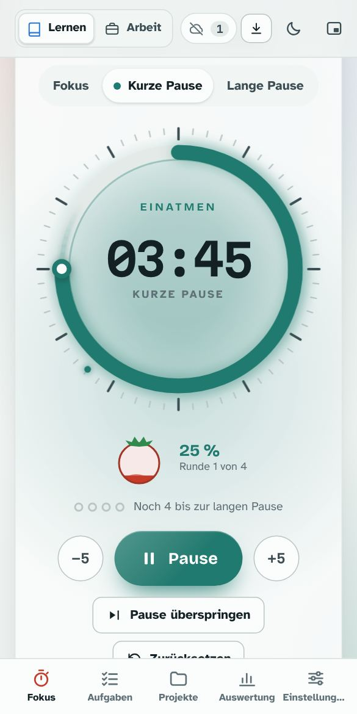
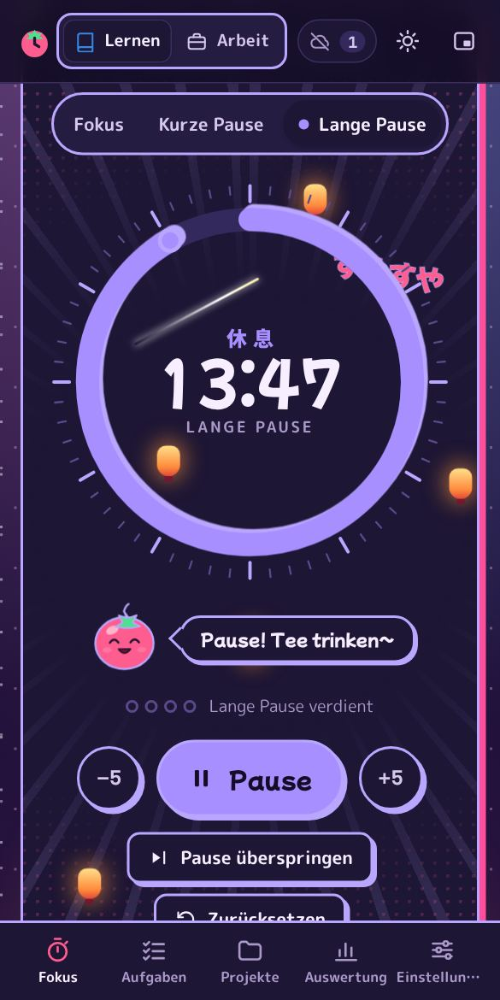
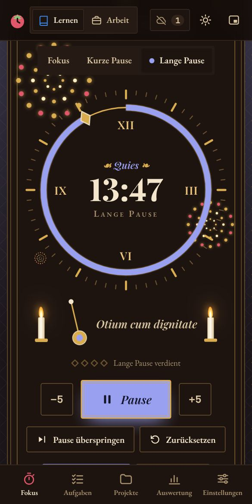
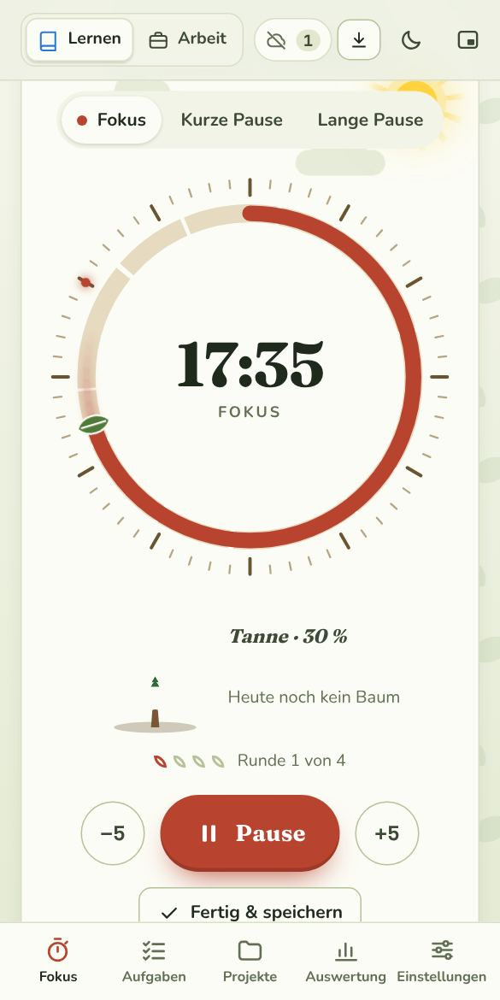
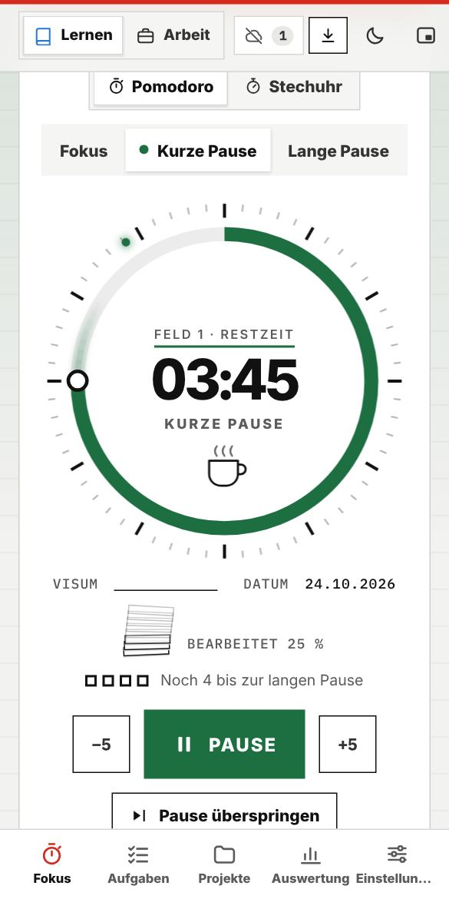
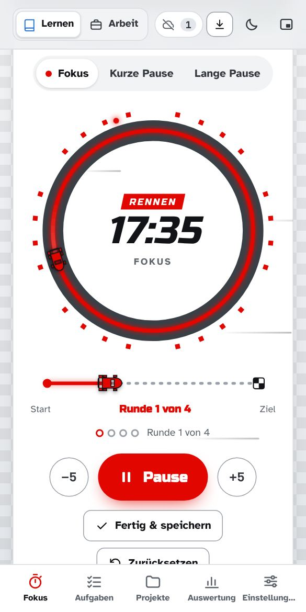
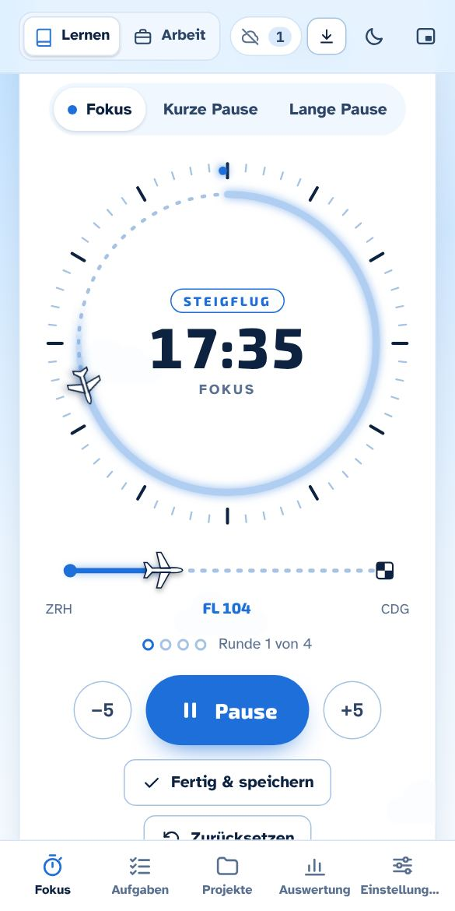
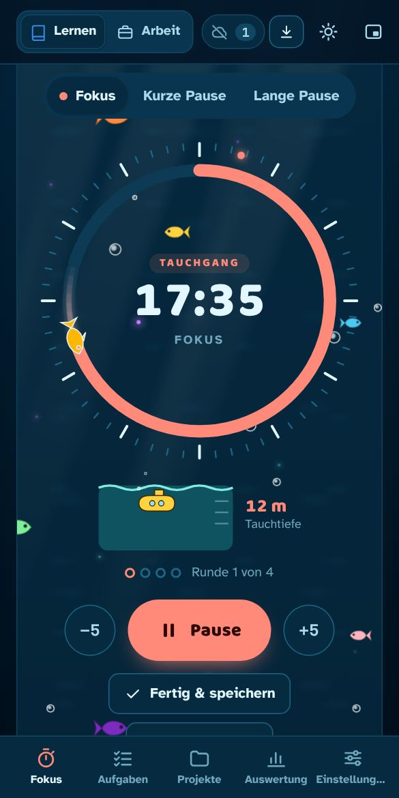
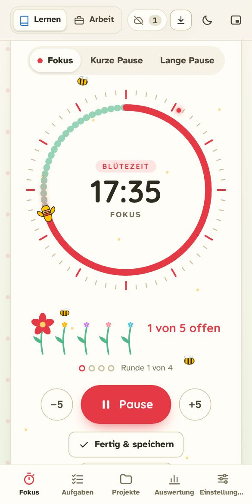
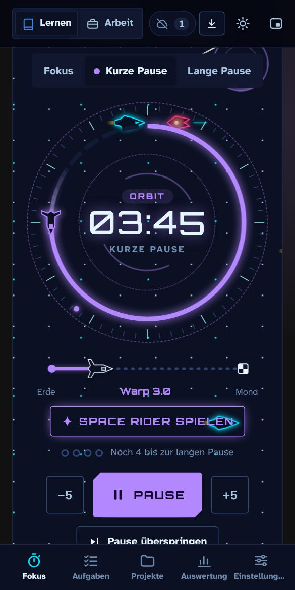
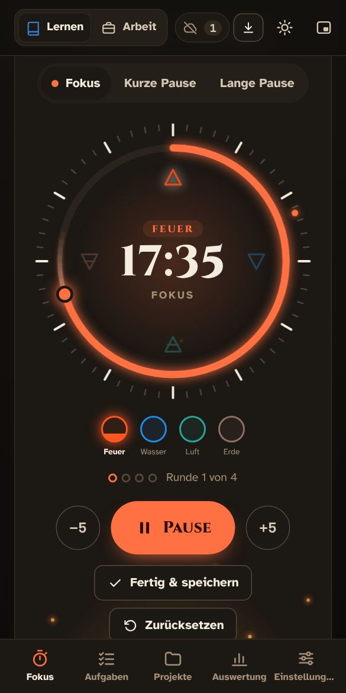
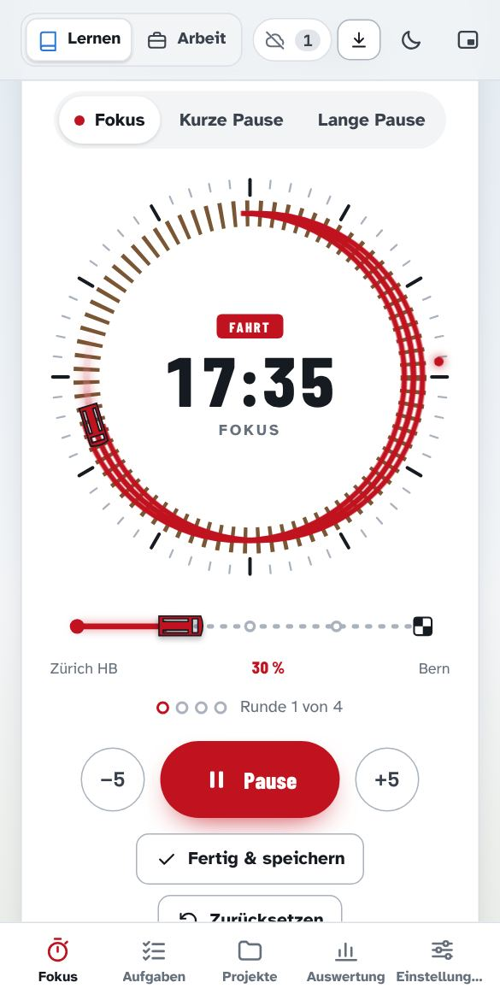
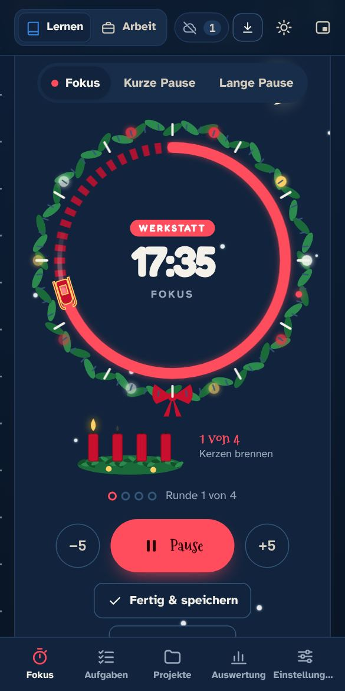
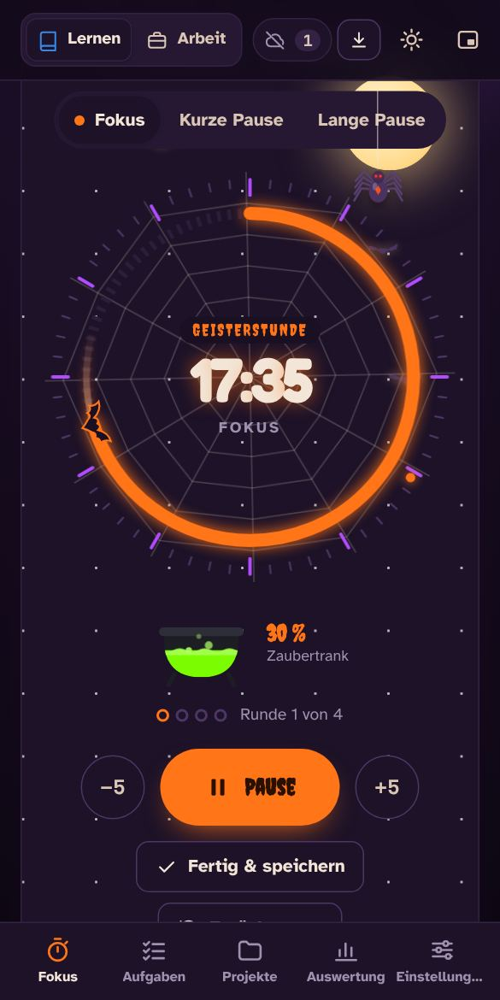
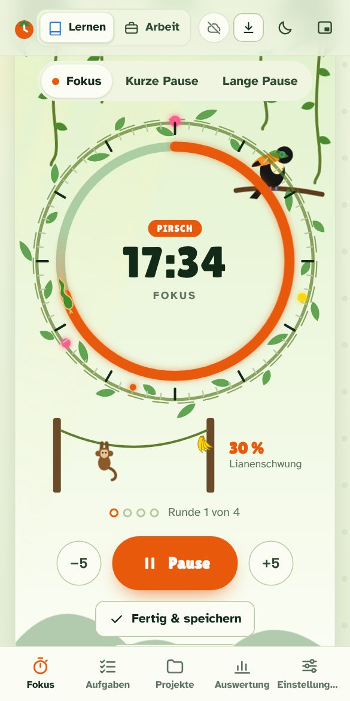
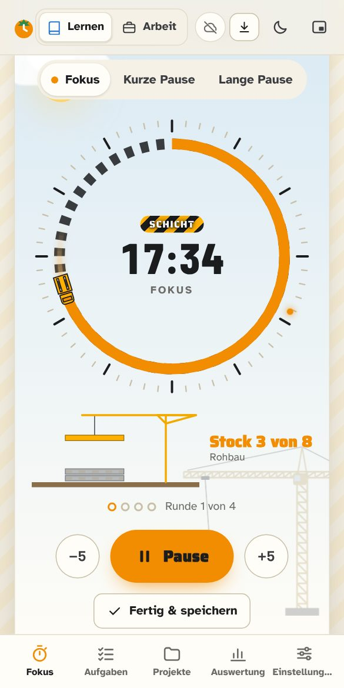
Installieren
Taktwerk wird direkt aus dem Browser installiert, ganz ohne App-Store. Danach startet es wie jede andere App.
Ideal mit Firefox, das auf dem PC keine Web-Apps installiert: Taktwerk als eigenes Programm mit Startmenü-Eintrag, offline und mit Sync.
Windows warnt beim ersten Start eventuell (SmartScreen): «Weitere Informationen» → «Trotzdem ausführen».
Kein Browser zur Hand oder ganz ohne Internet? Die Einzeldatei herunterladen und per Doppelklick öffnen. Die Daten liegen dann nur in dieser Datei im Browser.
25 Minuten. Ein Thema. Kein Handy-Scrollen. Los geht’s.